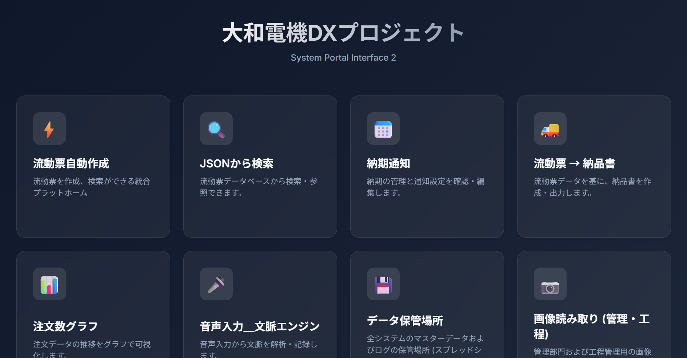
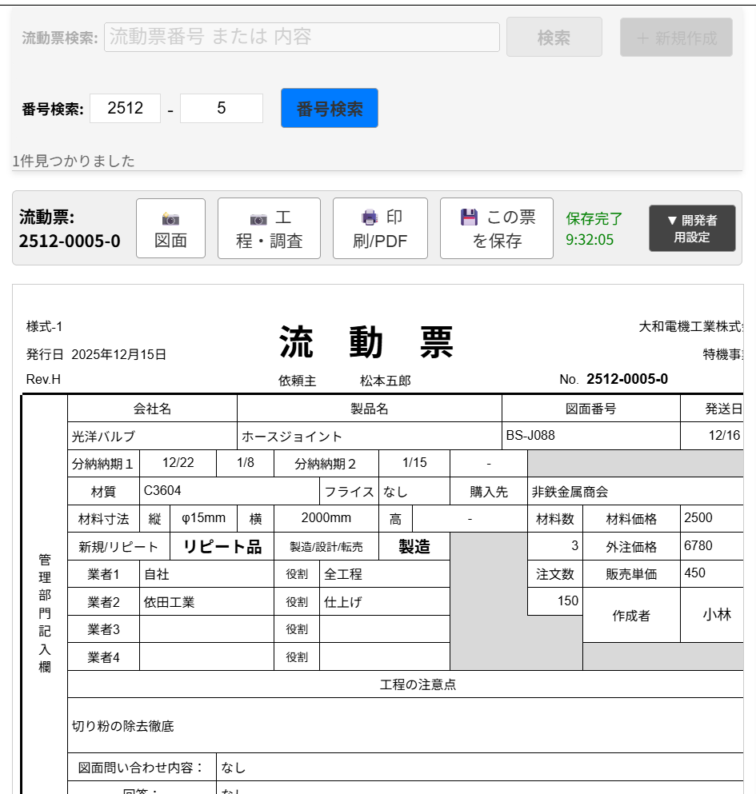
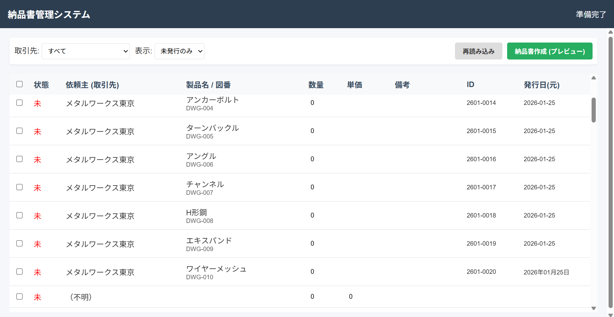
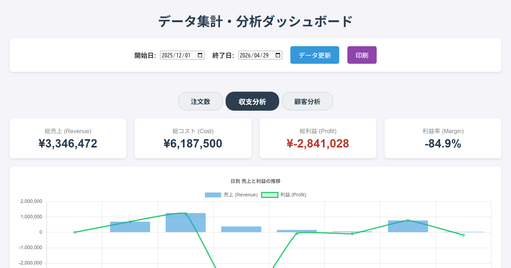

🏭
製造業
注文書・工程票が紙のまま。毎日1〜2時間を手入力に取られている。
撮るだけで、AIが製品名・寸法・数量を構造化
業種を問わず、あなたの現場の
"バラバラ"を、"整った構造化データ"に変えます。
業種はちがっても、困りごとは驚くほど似ています。6つの現場で、同じ仕組みが効いています。
注文書・工程票が紙のまま。毎日1〜2時間を手入力に取られている。
撮るだけで、AIが製品名・寸法・数量を構造化
工事日報・安全確認表が手書き。現場ごとに集計するのが大変。
写真 → 自動データ化 → 工程管理へ接続
紙の証憑・申請書が山積み。あとから目的の書類を探せない。
OCR＋AIで、検索できるデータベースへ
作業記録・出荷伝票が手書き。担当者しか読めない字もある。
音声入力や写真から、自動でログ化
仕入伝票・在庫メモがバラバラ。月末にようやく全体が見える。
一元データベース化＋リアルタイム分析
記録は紙中心、共有はいつも翌日以降。
音声 → 構造化テキスト → 共有DBへ
特別な機材も、巨大なサーバーもいりません。今ある書類とスマホで、すぐに始められます。
スマホで書類を撮る、または声で吹き込む。専用機器も、特別なアプリもいりません。
Gemini AIが内容を読み取り、項目ごとに意味のあるJSON／表データに変換します。
納品書発行・メール通知・グラフ分析まで連動。"入力"が終わったら、仕事は半分終わっています。
大和電機工業株式会社専用に作ったWebアプリの一部です。すべて学生チームが開発・運用しています。

社員が全アプリにアクセスする入口。流動票作成、JSON検索、納期通知、納品書発行、グラフ、音声入力、データ保管、画像読み取り — 用途別に8つのWebアプリを集約しています。

注文書・図面の写真をアップロードすると、AIが製品名・材質・寸法・数量・分納納期などを自動抽出し、そのままデータ化します。これまで毎日1〜2時間かけていた手入力作業が、ほぼゼロになりました。

蓄積されたデータから、必要な取引先ぶんの納品書を即時発行。印刷・PDF出力・再発行管理まで自動化しています。月末のバタバタが、ぐっと減りました。

売上・原価・粗利・顧客別ランキングをダッシュボードでリアルタイム可視化。期間指定・注文数／収支／顧客分析の切り替えもその場でできます。経営判断のスピードが上がります。
私たちが作ったのは、特定の業種に依存しない "紙・音声・画像 → 構造化データ変換の仕組み" です。製造業の流動票も、建設業の工事日報も、事務所の申請書も、変換のしくみ自体は同じです。
業務フォーマットをお見せいただければ、同じエンジン（Gemini API＋Google Workspace）で、御社の現場に合わせた仕組みを組み立てられます。
まずは週次レポートの自動化など、小さく始めて段階的にDXを進めることができます。
地域の製造現場に実際に通い、"本当の困りごと"を聞き取って設計・実装した、現場発のシステムです。
現場の方と一緒に、「この作業、毎日何時間かけてますか？」と一つずつ数えるところから始めました。そうして出てきた課題を、Google Apps Script と Gemini API という身の回りの道具だけで解いています。
学生チームなので、大規模SIerのような分厚い提案書は出せません。そのかわり、翌週には動くものを見せに行ける身軽さがあります。現場に寄り添って、小さく速く作ります。
業務フォーマットと規模によって変わりますが、Google Workspace と Gemini API
の月額利用料を除けば、小規模なPoC（試験導入）は数千円〜ご相談可能です。
まずはお問い合わせフォームよりご相談ください。
大丈夫です。現場で使っていただく画面は、ボタンを押す・写真をアップロードする・表を見る、といった操作だけで完結するように設計しています。大和電機工業でも、専任のIT担当者を置かずに運用されています。導入時のレクチャーと、簡単なマニュアルもこちらでご用意します。
データは御社のGoogle Workspace内に保管され、第三者のサーバーにコピーされることはありません。Gemini APIへの送信内容も、学習には利用されない設定で運用します。アクセス制御もGoogleアカウントで細かく行えるため、従来の社内ファイルサーバーと同等以上の管理が可能です。
御社のGoogleドライブとスプレッドシートに保存されます。バックアップや移行も、通常のGoogleファイルと同じ方法で行えます。将来、別のシステムに乗り換えたくなった場合も、CSV／JSONで書き出せるので持ち運びが効きます。
はい、同じ仕組みを応用できます。建設業の工事日報、士業の申請書、農業の作業記録、小売の仕入伝票、介護の記録など、"紙・手書き・音声"で発生する業務であれば、基本的には同じアプローチで構造化できます。まずは御社のフォーマットを見せていただくところから始めさせてください。
業種・現場の状況をお聞かせいただければ、無料で「AI化の可能性診断」をお送りします。
まずは雑談ベースで構いません。現場の"困りごと"を教えてください。